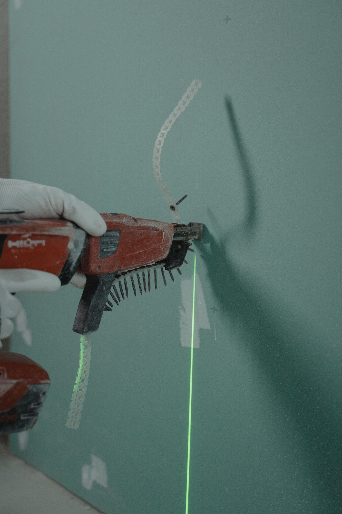
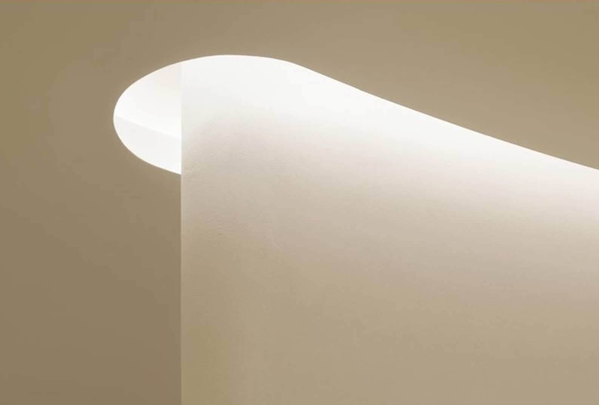
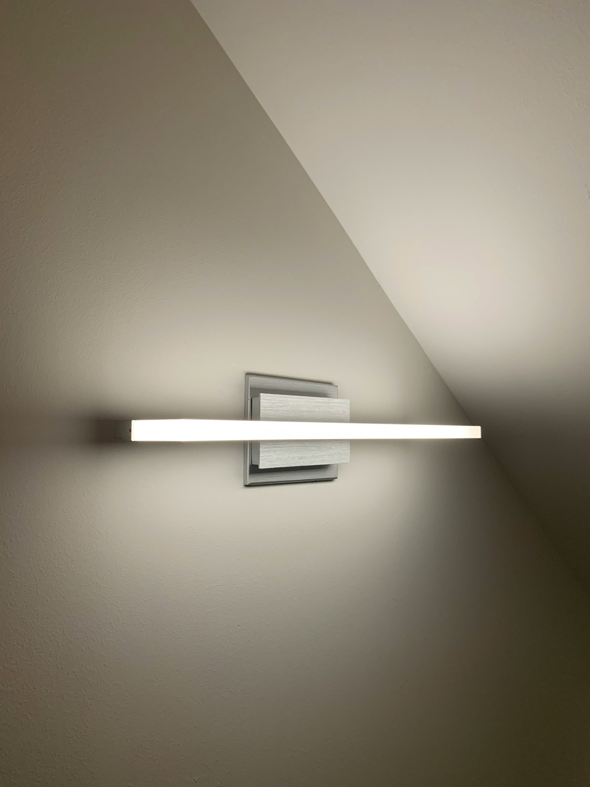
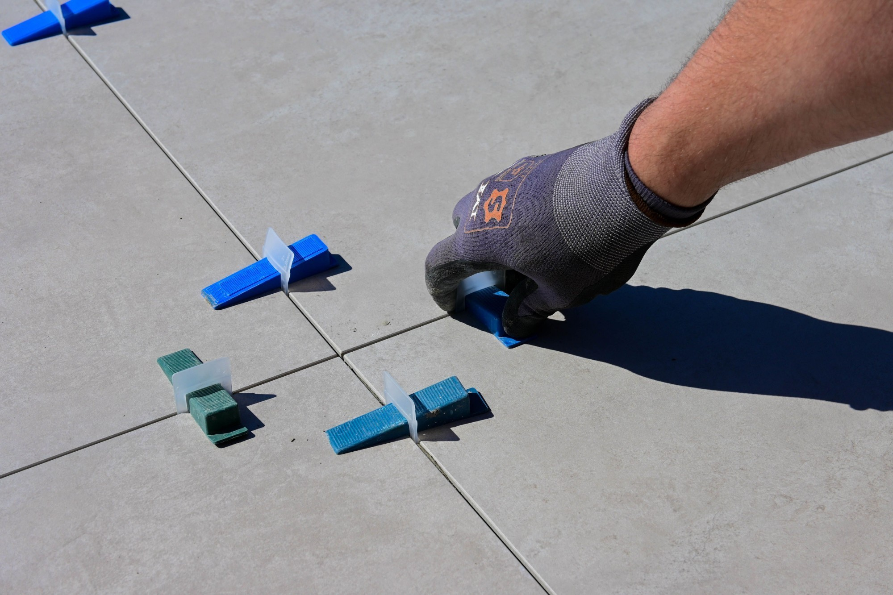
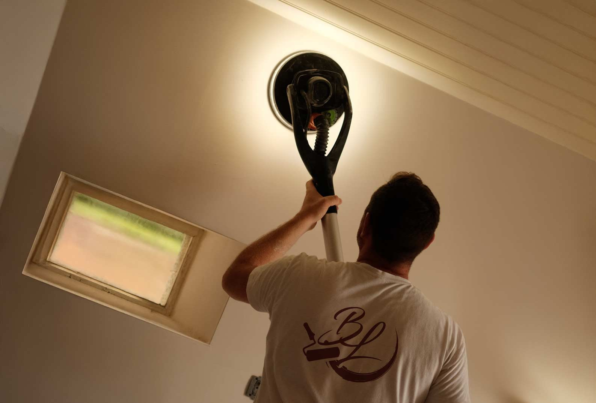
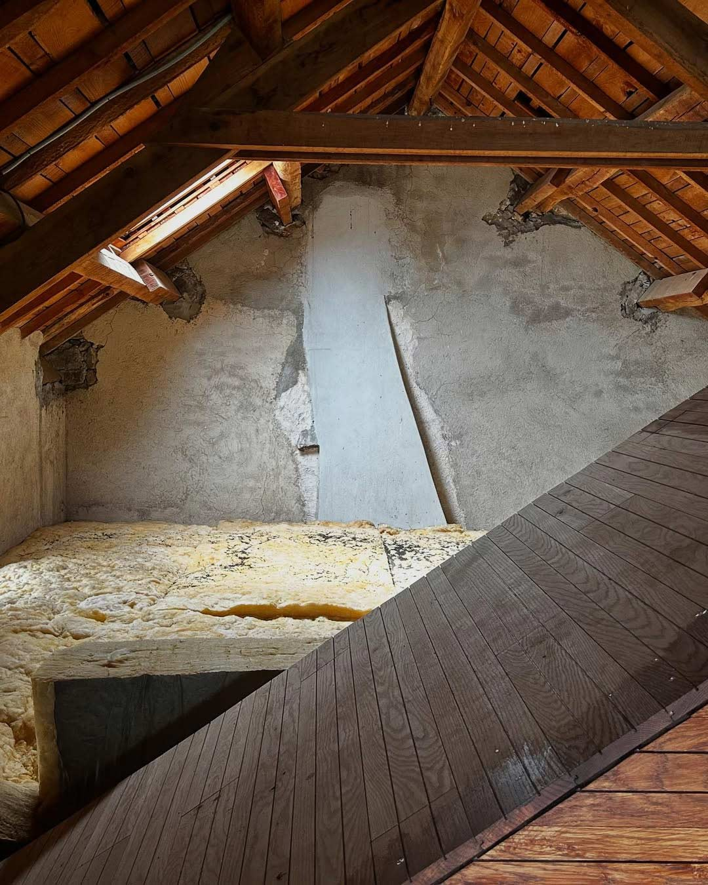
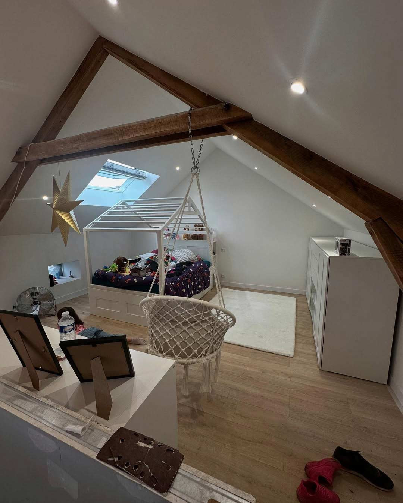

Des murs droits, des plafonds nets, une isolation qui se fait oublier.
Cloisons / Faux plafonds / Isolation

Une préparation sans compromis, une finition qui tient dans le temps.
Intérieur / Façades / Boiseries
Des joints réguliers, des coupes nettes, des pièces d’eau étanches.
Sols / Salles de bains / Faïence
Cloisons, faux plafonds, isolation des murs et des combles.

Murs, plafonds, boiseries et façades, finitions soignées.

Sols, salles de bains, douches à l’italienne et faïence.
06 58 38 78 37
Combrailles / Riom / Clermont-Ferrand

VisiteUn seul artisan pour vos cloisons, vos peintures et vos carrelages, des Combrailles à Clermont-Ferrand.


Isolation, plaques de plâtre, bandes, peinture : un seul artisan du début à la fin.